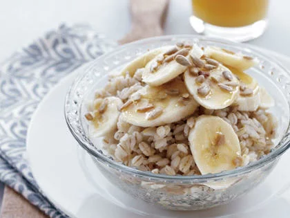

Banana Split Oatmeal

Ingredients:
- 2/3 cup water
- 1/3 cup uncooked quick-cooking pearl barley
- 1 banana, sliced
- 1 tablespoon unsalted salted sunflower seeds
- 1 teaspoon honey
Directions:
- Combine 2/3 cup water and barley in a small microwave-safe bowl. Microwave on HIGH 6 minutes.
- Stir and let stand 2 minutes.
- Top with banana slices, sunflower seeds, and honey.